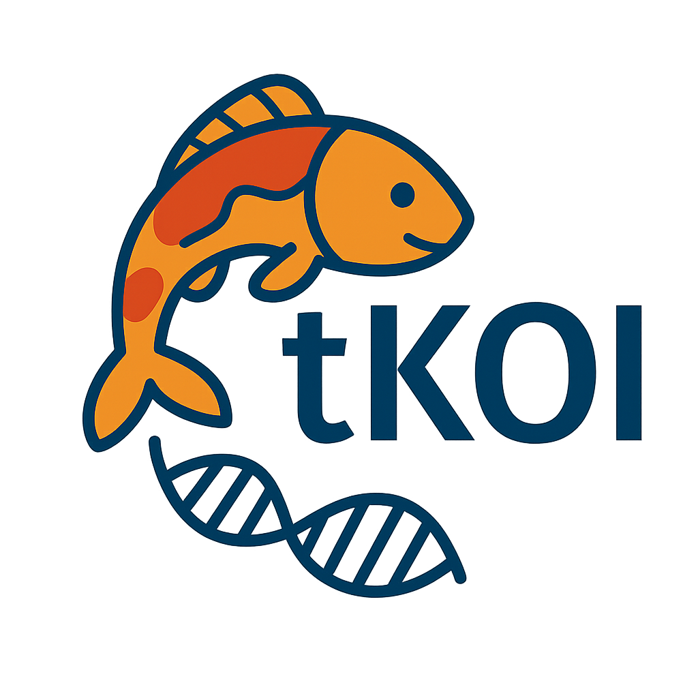

Use tKOI with an Agent and Its Analysis Graph
Source:vignettes/agent-workflows.Rmd
agent-workflows.RmdPrepare an Agent Workflow
tKOIAgent
version 2 provides the tkoi-agent plugin. It combines two
skills with an MCP server that reads a local tKOI analysis:
-
tkoi-analysisguides input preparation and runs the R package. -
tkoi-knowledge-graphsearches nodes, follows connections, and reads enrichment results from the graph saved with that analysis.
For Codex, Claude Code, or BioRouter, follow the plugin’s README
and setup
guide to install and configure the plugin. Use its preprocessing
guide to prepare gene identifiers, fold changes, and p-values before
analysis. The R package requires gene_name (Ensembl gene
ID), logfc, and pvalue columns.
Ask the agent to use tkoi-analysis to check and prepare
your input, run tKOI, and save the analysis and provenance. The graph
workflow requires tkoi 1.3.0 or later so the saved result contains the
exact graph used for the run.
Keep the Analysis and Graph Together
run_tkoi() stores the igraph supplied as
subnetwork in result@subnetwork. This includes
its vertex and edge attributes and applies to both the package’s default
graph and custom graphs. get_analysis_graph() retrieves
that stored graph without substituting a different network.
After running an analysis in R, save the complete result:
graph = tkoi::get_analysis_graph(result)
saveRDS(result, "analysis.rds")
analysis_path = normalizePath("analysis.rds", mustWork = TRUE)
analysis_pathGive the plugin’s connect_analysis tool the absolute
file path as its path argument, for example:
The local connection reads the graph and enrichment tables from this
result. connect_analysis returns an
analysis_id, the saved file’s MD5 identifier. Keep that
value and supply it as the first argument to every subsequent MCP tool
call. This prevents another agent’s connection from silently changing
the graph used by your queries. The server rejects stale IDs or changed
files; if you save a revised result, reconnect explicitly and use its
returned ID.
An older result without its stored graph cannot establish which graph
produced the statistics. get_analysis_graph() and the
plugin reject such a result; rerun the analysis with its original graph
and save a new result. The package’s current tkoi_net is
not used as a fallback.
Explore with the MCP Tools
Connect the result first, then inspect its schema and resolve node
IDs before traversing. Every query names the intended analysis through
analysis_id.
| Tool | Use |
|---|---|
connect_analysis(path) |
Open the local RDS result and its saved graph; return
analysis_id. |
get_graph_schema(analysis_id) |
Inspect node types, vertex and edge attributes, and graph direction. |
search_nodes(analysis_id, query, node_type = NULL, limit = 25) |
Find labels or identifiers and obtain the graph’s node IDs. |
get_node_neighbors(analysis_id, node_id, hops = 1, limit = 100) |
Inspect nearby nodes within a bounded number of hops. |
get_path_between_nodes(analysis_id, source_id, target_id, max_hops = 3) |
Find a connecting path within the requested hop limit. |
get_enrichment_results(analysis_id, node_type, limit = 25) |
Read a node type’s enrichment table from the specified result. |
For example, ask the agent to inspect the schema, list enriched biological processes, resolve a gene and process to node IDs, and examine their connections. Use IDs returned by the tools: a gene symbol or Ensembl identifier is not necessarily the graph’s vertex name. The knowledge graph skill describes the exploration workflow in detail.
Use the Same Graph Directly in R
The same exploration can be done without an agent. Read the saved result, retrieve its graph, and pass that graph explicitly to helper functions:
result = readRDS("analysis.rds")
graph = tkoi::get_analysis_graph(result)
node_id = result@network_summary_statistics$BiologicalProcess$node_id[1]
neighbors = tkoi::get_neighboring_nodes(
node_id,
degree_expansion = 1,
subnetwork = graph
)
igraph::vertex_attr_names(graph)
igraph::edge_attr_names(graph)
# plot_network() defaults to the graph stored in result
tkoi::plot_network(result, target_node_id = node_id, degree_expansion = 2)Interpret the Connections
The bundled graph is undirected. Its vertex attributes include
name (an opaque node ID), identifier,
source, labels, and degree. Its
edges store edge_type, for example ISA_AiA or
PARTOF_ApA. These labels do not establish direction or an
activating or inhibiting effect. The analysis and graph traversal treat
connections in both directions.
Report only relation labels and provenance present in the actual
graph attributes. A vertex’s source attribute is not
evidence for an edge. The bundled edge attributes do not supply evidence
records or source citations; inspect a custom graph’s schema before
describing any additional attributes. An absent path within the
requested hop limit is not evidence of no biological relationship.
Personalized PageRank, permutation enrichment, and graph connections prioritize associations and candidate mechanisms. They do not establish causality, regulatory direction, or treatment effects. Use the result’s enrichment statistics, input measurements, and independently checked literature to assess the hypotheses you identify.